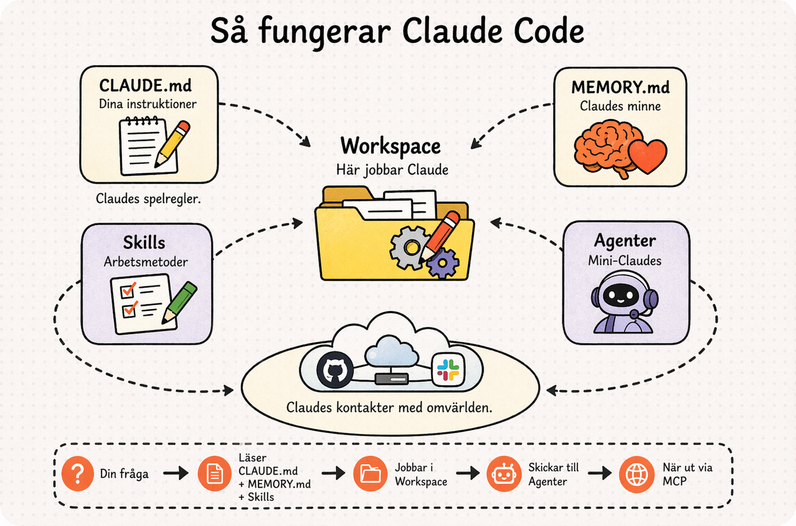

Workspace
Mappen där Claude jobbar. Alla dina filer, all kontext, allt på ett ställe.
INKA AI Labs · Intern playbook
Från prompting till att ha en AI-assistent som faktiskt gör jobbet. Den här lathunden tar dig hela vägen – och du behöver inte kunna programmera.
De flesta har använt AI som en avancerad sökmotor. Du ställer en fråga, får ett svar, kopierar det, klistrar in det någonstans och justerar. AI:n ser aldrig dina filer, dina mappar eller ditt faktiska arbete.
Claude Code fungerar annorlunda. Det lever på din dator. Det kan se dina filer, läsa dina mappar, söka igenom dina dokument och faktiskt göra saker. Skapa filer, bygga webbsidor, analysera data, skriva presentationer. Riktiga filer som du kan öppna, mejla vidare och jobba vidare med.
Tänk på det som skillnaden mellan att maila en konsult en fråga och vänta på svar, och att ha konsulten sittande bredvid dig vid datorn, med tillgång till alla dina filer, redo att faktiskt göra jobbet.
Det bästa? Du behöver inte kunna programmera. Du ger instruktioner på vanlig svenska, en ordentlig briefing precis som du skulle ge en ny kollega. Ju mer kontext du ger, desto bättre blir resultatet. I den här playbooken visar vi hur du själv kommer igång – du bygger ett riktigt projekt, publicerar det live på internet och skapar din egen AI-assistent utan att skriva en enda rad kod.

Claude Code är byggt kring några centrala byggstenar som återkommer i hela playbooken. Allt skrivs i markdown – ett enkelt textformat med rubriker och punktlistor. Inga programmeringsspråk, inga komplicerade verktyg. Bara text.
Mappen där Claude jobbar. Alla dina filer, all kontext, allt på ett ställe.
Dina instruktioner till Claude – spelreglerna. Claude läser den automatiskt varje gång du startar.
Claudes eget minne – saker den lär sig om dig över tid, mellan sessioner.
Specialister du skapar för komplexa uppgifter. Tänk: mini-Claudes med varsitt expertområde.
Arbetsmetoder. Korta instruktioner som säger åt Claude hur den ska göra något, varje gång.
Paket med färdiga skills, kommandon och agenter. Ett snabbt sätt att utöka Claude Code med kapaciteter någon annan redan byggt.
Del 1 av 2
Det här gör du en gång, så är du redo att testa allt i den här playbooken. Räkna med ungefär 20 minuter.
I appen finns också fliken Cowork, ett mellanting mellan Chat och Claude Code. Precis som i Code kan du ge Claude tillgång till en mapp där den kan läsa, skapa och ändra filer. Skillnaden är hur du jobbar: i Cowork är upplevelsen mer guidande och konversationsdriven, medan Code är mer direkt och hands-on där du styr arbetet steg för steg i din egen miljö. I den här playbooken fokuserar vi på Code.
Vi rekommenderar desktop-appen. Den är betydligt lättare att komma igång med, mer användarvänlig och ger bra översikt (bland annat över hur sub-agenter hänger ihop). Terminalen passar bättre när du vill:
Båda versionerna använder samma underliggande motor. Du kan alltid byta eller använda båda parallellt.
Claude Pro har ett rullande tidsfönster på fem timmar med ungefär 40–80 meddelanden, beroende på hur stora filer Claude läser. Det räcker långt – men det är bra att ha några vanor:
/clear mellan övningar. Det rensar pratet sedan starten men behåller projektet (CLAUDE.md läses in på nytt). Sparar tokens och håller Claude skarpare./compact komprimerar en lång session. Bra om du inte vill rensa helt utan bara sammanfatta det som varit./cost visar hur mycket du har förbrukat. Praktiskt att checka mellan övningarna.Gå till claude.ai/download och ladda ner appen för Mac eller Windows. Installera som ett vanligt program. Appen innehåller chatt, samarbete och Claude Code på ett ställe.
Claude Code kräver ett betalkonto. När du öppnar appen kan du logga in om du redan har ett konto, eller skapa ett nytt. Uppgradera sedan till Pro under Settings > Subscription. Välj månadsabonnemang ($20/mån) om du vill kunna avsluta enkelt.
I appen hittar du tre flikar uppe i vänstra hörnet: Chat, Cowork och Code (markerad med </>-symbolen). Klicka på Code.
Skapa en ny tom mapp på din dator (t.ex. under Documents). Välj sedan mappen i Claude-appen precis ovanför chatrutan. Nu är du redo – övningarna längre ned visar vad du kan göra där.
xcode-select --installgit --versionGitHub är som en molnlagring för projekt, men med superkrafter. Det håller koll på varje ändring, låter dig publicera webbsidor gratis och gör det enkelt att dela ditt arbete. Du behöver GitHub för att:
Gå till github.com och klicka "Sign up". Ett gratis konto räcker.
Öppna Claude Code och klistra in den här prompten:
GitHub CLI är ett litet verktyg som gör att Claude Code kan prata med GitHub åt dig – skapa ett repository, ladda upp filer och aktivera GitHub Pages. Claude hjälper dig installera det, logga in och publicera din första sida, steg för steg.
Om Claude ber dig installera något själv (t.ex. Homebrew eller xcode-tools), svara med:
Följ sedan Claudes instruktioner. Ibland behöver den ditt lösenord eller att du godkänner ett steg, men den säger till när det behövs.
Del 2 av 2
Konkreta saker du kan göra i Claude Code, från enkla till mer avancerade. Skumma gärna igenom först så du vet vad som väntar – sedan kör du dem i din egen takt.
Starta Claude Code i en tom mapp och be den presentera sig. Utforska vad den kan se och göra.
Testa:
Skapa en projektmapp för ett litet företag och låt Claude fylla den med allt som behövs: företagsbeskrivning, tonalitet, visuell identitet och rollbeskrivning. Sedan bygger Claude en CLAUDE.md – projektets "minne". Välj ett av alternativen nedan.
Först: skapa en mapp och starta Claude Code
Har du ett eget företag eller en favorit? Peka Claude till hemsidan så skapar den allt.
Inget företag i åtanke? Beskriv ett fiktivt och låt Claude bygga allt.
Har du ett företag och får använda eget material? Lägg in vad du har – projektbeskrivningar, kundmaterial, varumärkesguider, säljmaterial – i mappen och låt Claude jobba med det direkt.
Väljer du detta alternativ kan du hoppa över nästa steg – CLAUDE.md skapas direkt här.
Sedan: låt Claude bygga CLAUDE.md
Testa att det fungerar
Starta om Claude Code (i desktop-appen: börja en ny session i samma projekt, eller stäng och öppna appen igen. I terminalen: skriv /exit och starta sedan med claude).
Claude ska nu svara baserat på CLAUDE.md och alla filer i mappen.
Nu bygger du en agent: en specialist som löser en riktig uppgift åt ditt företag. Först ber du Claude generera fiktiv data som passar just ditt företag, sedan skapar du en agent som jobbar med den. Välj ett spår.
En agent är en textfil i markdown som du sparar i mappen .claude/agents/. Den fungerar som en specialiserad roll – när du ger Claude Code en uppgift kan den delegera delar av jobbet till rätt agent. Agenter passar för uppgifter som kräver flera steg, läsning av flera filer och längre output, som att bygga en presentation eller analysera data.
En skill hanterar kortare, återkommande instruktioner – som att alltid formatera mejl på ett visst sätt. En skill är en textfil som Claude läser innan den utför en uppgift, ungefär som ett litet facit över hur något ska göras.
Använd en agent när uppgiften är komplex och kräver flera steg. Använd en skill när du vill att Claude alltid ska göra något på ett visst sätt.
Skriv rakt ut vad du vill ha, t.ex. "Skapa en Agent som heter Dataanalytiker och som kan läsa CSV-filer och hitta trender." Claude förstår vad du menar och skapar agentfilen åt dig automatiskt i .claude/agents/.
Om Claude tolkar fel och förväxlar en agent med en skill, lägg till: "Spara filen i .claude/agents/." I terminalen finns också kommandot /agents som öppnar ett interaktivt gränssnitt – det funkar dock inte i desktop-appen, så håll dig till vanlig text där.
.claude/?Mappar och filer som börjar med en punkt är dolda som standard. För att se dem:
Du behöver inte se mappen för att Claude ska kunna jobba med den, men det är skönt att veta var dina agenter och skills ligger.
En potentiell kund har hört av sig och du har ett möte på fredag. Du behöver ett presentationsunderlag, snabbt.
Steg 1: generera data
Steg 2: skapa agenten
Steg 3: testa
Du har försäljningsdata och vill snabbt förstå vad som går bra och vad som inte gör det.
Steg 1: generera data
Steg 2: skapa agenten
Steg 3: testa
Inkorgen är full och du behöver proffsiga svar, snabbt.
Steg 1: generera data
Steg 2: skapa agenten
Steg 3: testa
Nu har du en mapp full med filer: kontextfiler, en CLAUDE.md, genererad data och output från din agent. Det fungerar, men det börjar bli rörigt. Låt Claude organisera allt i en tydlig mappstruktur.
Testa:
En skill är en instruktion som talar om för Claude hur det ska hantera en viss typ av uppgift. Det kan handla om format och tonalitet, men också om hela arbetsflöden, analysmetoder eller kreativa processer. Du kan både använda färdiga skills som andra har byggt och skapa helt egna.
.md-fil som sparas i .claude/skills/. När du ber Claude skapa en skill skapar den filen åt dig automatiskt. Du behöver inte aktivera skillen manuellt – Claude hittar själv att den passar baserat på beskrivningen. Om Claude missar att använda en skill, kan du hänvisa till den direkt med dess sökväg.
Steg 1: generera ett kundärende att svara på
Steg 2: be Claude skapa Kundmejl-skillen
Claude skapar filen .claude/skills/kundmejl.md åt dig automatiskt.
Steg 3: testa skillen
Verifiera att svaret följer strukturen du definierade – personlig hälsning, en mening om ärendet, max tre meningars svar, nästa steg. Justera vid behov:
Om Claude inte använder skillen automatiskt: hänvisa till den direkt – "Använd skillen i .claude/skills/kundmejl.md för att skriva svaret."
Det finns ett snabbväxande community som delar skills:
Plugin-marknadsplatsen hittar du genom att klicka + bredvid chatrutan, välja Plugins och sedan Add plugin. Den är centralt kurerad av Anthropic, och nytt innehåll rullas ut successivt – en specifik plugin kan vara osynlig för dig medan en kollega ser den.
Syns en plugin inte i den grafiska marknadsplatsen kan du installera den via terminalen. Gå till din workspace-mapp med cd, starta med claude och prova sedan:
Funkar det inte, lägg till Anthropics marknadsplats och installera pluginen:
Nu tar du ditt projekt ut i världen. Du skapar en enkel webbsida för ditt företag och publicerar den live på internet, gratis, via GitHub Pages.
Steg 1: skapa en landningssida
Steg 2: publicera på GitHub Pages
Claude skapar ett GitHub-repo, pushar filerna och aktiverar GitHub Pages. Du får en URL tillbaka.
Steg 3: gör en ändring och se den live
Nu har du gått hela vägen: ändring → commit → push → live-uppdatering. Det är så alla moderna webbsidor uppdateras.
Hittills har du bett Claude bygga sidan från text. Du kan också ge Claude en bild att utgå ifrån, t.ex. en wireframe (en skiss på hur sidan ska vara uppbyggd). Dra bilden direkt in i chatrutan i Claude Code och skriv:
Claude analyserar bilden, identifierar sektionerna och bygger en HTML-sida som matchar. Samma teknik fungerar med skisser du själv ritat på papper och fotograferat med mobilen.
Nu har du grunden. Här är sex idéer för att fortsätta utforska Claude Code i din egen vardag. Välj det som passar din roll bäst.
Välj något du gör minst en gång i månaden (månadsrapport, offert, statusmejl, mötesprotokoll). Skapa en skill med mallen och en agent som producerar resultatet. Nästa månad kör du samma prompt igen och sparar timmar.
Be Claude göra research om personen eller företaget du ska träffa, sammanställa en briefing och föreslå frågor att ställa. Spara underlaget i en mapp så Claude kan bygga vidare på det över tid.
Ta en lång rapport, mötesanteckningar eller ett transkript och låt Claude omvandla det till andra format: ett LinkedIn-inlägg, en blogg, en pitch, en sammanfattning till ledningen.
En ny mapp för varje stort uppdrag. Samla kontrakt, brief, kommunikation och anteckningar där. Claude kan svara på frågor, skriva uppföljningar och hålla reda på åtaganden. Särskilt värdefullt för konsulter och projektledare.
Lägg en bunt dokument i en mapp (kundundersökningar, policyer, kontrakt, artiklar) och be Claude hitta mönster, jämföra eller sammanfatta. Bra för HR, juridik, research och ledning som behöver överblick.
Installera en skill från clskills.in eller Awesome Claude Skills och se hur andra har löst vanliga problem. Anpassa den till ditt eget sätt att jobba – snabbaste sättet att lära sig nya tricks.
Alla begrepp du behöver, förklarade utan krångel.
# Rubrik, **fetstil**, - punktlista. Det är fortfarande en helt vanlig textfil som du kan öppna och redigera var som helst./. T.ex. /help för hjälp eller /commit för att spara ändringar. Genvägar för vanliga uppgifter.dittnamn.github.io/projektnamn.claude --resume./compact eller /clear./undo.claude när du startar en session, t.ex. claude --chrome eller claude --model opus. Se alla med claude --help.claude --chrome (eller /chrome) kan Claude styra din webbläsare: klicka, fylla i formulär och testa webbappar. Kräver tillägget "Claude in Chrome" från Chrome Web Store.Starta inte för stort. Ett litet projekt först, sedan bygger du vidare.